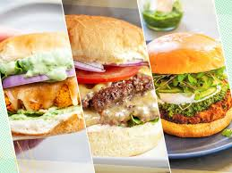

Turkey Burgers

This is the best turkey burger recipe. After making them the first time my husband said 'no more' to beef
burgers. These are really good - any cooking method may be used, and they freeze very well. The recipe can also
be used for meatballs or meatloaves.
Ingredents
- 1 pound ground lean (7% fat) beef
- 1 large egg
- ½ cup minced onion
- ¼ cup fine dried bread crumbs
- 1 tablespoon Worcestershire
- 1 or 2 cloves garlic, peeled and minced
- About 1/2 teaspoon salt
- About 1/4 teaspoon pepper
- 4 hamburger buns (4 in. wide), split
- About 1/4 cup mayonnaise
- About 1/4 cup ketchup
- 4 iceberg lettuce leaves, rinsed and crisped
- 1 firm-ripe tomato, cored and thinly sliced
- 4 thin slices red onion
Steps
- Divide the ground beef.
- Shape the patties. ...
- Warm the pan
- Toast the buns.
- Increase the heat to medium-high.
- Cook the burgers for 3 to 5 minutes.
- Flip the burgers and cook another 3 to 5 minutes. ...
- To make cheeseburgers.